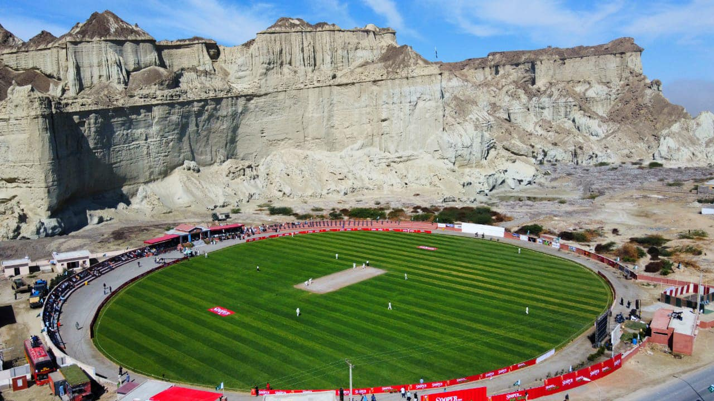

Places
Hingora National Park
Hingol National Park is also a sanctuary for Sind Ibex and Blandford Urial. The Coastal Highway snakes through the national park

Gwadar Port
The Gwadar Port is situated on the Arabian Sea at Gwadar in Balochistan province of Pakistan and is under the administrative control of the Maritime Secretary of Pakistan and operational control of the China Overseas Port Holding Company.

Gwadar Stadium
Gwadar Cricket Stadium, officially known as Senator Muhammad Ishaq Baloch Cricket Stadium, is a cricket ground in Gwadar, Pakistan.
Beach
The Gwadar beach is home to pristine beaches on one side and astonishing wind-carved formations on the other side.